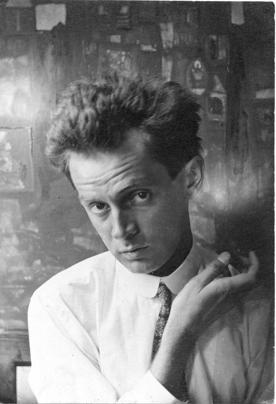

The Hofburg Palace in Vienna, Austria.
The Viennese Modern Art Movement is one of the richest in art history. It is marked by two artists: Gustav Klimt (1862-1918) and Egon Schiele (1890-1918). Klimt served as a mentor to a much younger Schiele, however, the two artists tragically died in the same year.
Gustav Klimt
Egon Schiele